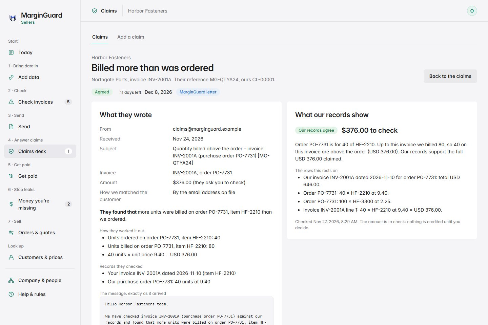
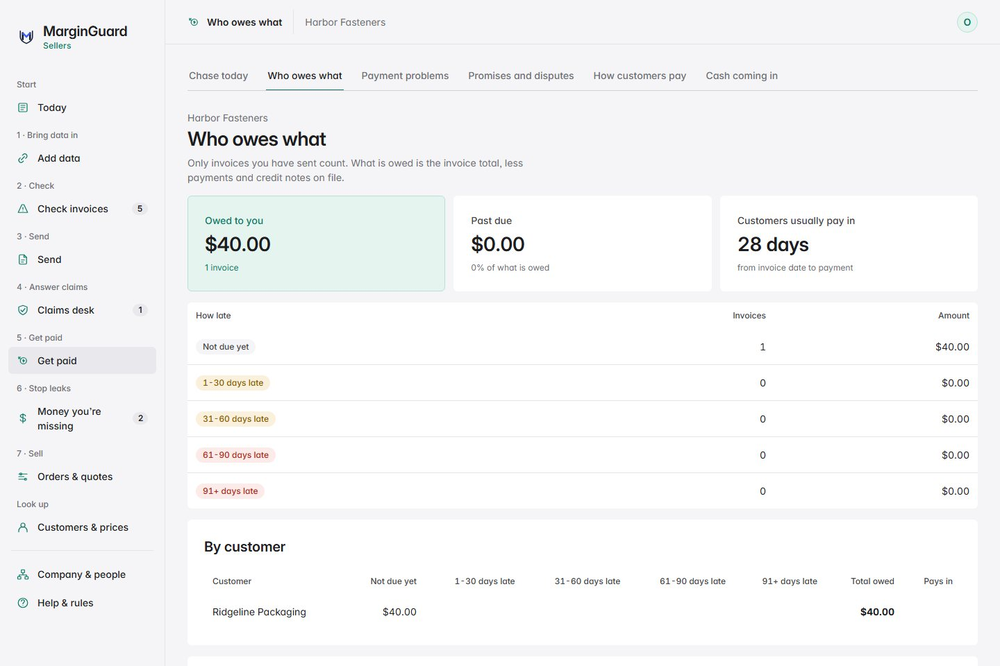
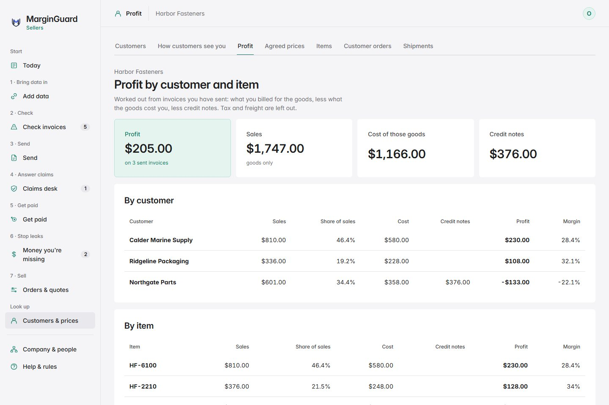

MarginGuard is for the buyer: it checks what suppliers charged and raises claims. MarginGuard for Sellers is for the supplier: it checks an invoice before it goes out, and answers claims when they come in.
They are two separate products, with separate accounts and separate data. Neither can see into the other, and a seller doesn’t need their customer to use MarginGuard, or the other way round.
When both sides use them, the paperwork fits: the seller’s electronic invoices and credit notes are read by MarginGuard without errors.
A reply to a MarginGuard claim letter keeps the [MG-XXXXXX] reference and the email thread, so it is matched to the right claim.
Check before you send
Every invoice is compared with what was agreed, ordered and shipped before the customer sees it. It finds a price above or below the agreed price, more billed than shipped, the same invoice or line twice, freight that was not agreed or was charged twice, a missing purchase order number, totals and tax that don’t add up, and deliveries that were never invoiced.
Each finding says what is wrong in one plain sentence and shows the rows it rests on.
Send
It produces the invoice as a PDF and as a standard electronic invoice (UBL 2.1, PEPPOL layout) that a customer’s system, including MarginGuard, reads directly. Also credit notes, customer statements, and spreadsheet files in the layouts MarginGuard takes in.
Once an invoice or credit note is marked sent it can’t be edited: what went out is kept exactly as it was.
Claims desk
Paste or upload a customer’s claim letter or email. It works out which customer and invoice the claim is about, checks it against your own records, and says: agree, agree in part, don’t agree, or can’t tell, with the evidence.
One click prepares the credit note and a reply the customer’s system can match. Money paid twice is refunded once, never twice.

Get paid
Who owes what and how late, by customer. Payments that came in short or twice. Reminder text ready to copy, and a note of who promised to pay and by when.

Money you’re missing
Deliveries never invoiced, invoices priced below the agreed price, short payments nobody chased, and credits given without a reason on file. Each with an amount.
Sell
Orders still to deliver and what was promised for each. Quotes are checked against the item’s cost: a quote below your minimum margin needs an owner or admin to sign it off. Quote files come in the layout MarginGuard compares suppliers with.
Profit
By customer and by item, from invoices actually sent, after credit notes. Items with no cost on file are counted and shown, never guessed.

How customers see you
Your own scorecard, worked out the way a buyer would: on-time delivery, invoices right first time, and claims and how they ended.
Add data
Upload spreadsheets (CSV or Excel) of customers, items, agreed prices, orders, shipments, invoices and payments, with templates to download. Anything that can’t be read safely is skipped with the reason, never guessed. A fictional example company is there to explore first.
Company and people
Six roles (viewer, sales, finance, operations, admin and owner), invitations by code, handing over ownership and closing the company. A record of who did what that can’t be quietly altered. Download everything: every list and every sent document in one ZIP file, at any time.
Security
One company never sees another’s records.
Passwords are kept only as scrypt hashes and need at least 12 characters. Two-step sign-in with an authenticator app and backup codes, a recovery code, and a lockout after wrong tries. Sessions end after 30 minutes unused.
Requests from other websites can’t change anything, and no uploaded file is stored on disk or opened as a program.
Money is kept as whole cents and exact decimals, never rounded.
Its honest limits today: there has been no outside penetration test yet, the database file is not encrypted on disk, and because it sends no email, an email address is not verified.
What it doesn’t do
It doesn’t send anything to your customers by itself. You download the file and send it.
It doesn’t send email or read a mailbox.
It doesn’t connect to a bank or an accounting system. Data comes in as CSV or Excel files.
There is no live connection between a buyer’s MarginGuard and your account: the two meet through files and email both already understand.
One currency per company, and long lists show their first 200 rows.
Early access
MarginGuard for Sellers is in early access and free for now. Prices aren’t decided yet.